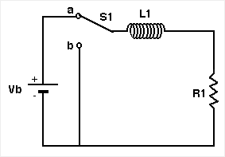

1. Consider a circuit where a battery, an inductor and a resistor are
connected in series, as shown below. If the switch, S1, is closed at
t0 =0 , the current in the inductor (circuit), at a later time, t, is given
by
I2 = If*(1 - exp(- t/t)))
where If = Vb/R is the current in the circuit for times very large compared
to t and t = L/R , the LR time constant for the circuit.

2. Consider the circuit shown below where S1 has been in position a
for a long time. At t0=0 S1 is switched to position b, removing the
battery from the circuit. The current in the inductor (circuit) at
a later time t is given by
I2 = I0*exp(-t/t)
where I0 = Vb/R is the current through the inductor at t=0 and
t and
t = L/R , the LR time constant for the circuit. Since the current through
an inductor cannot change instantaneously, the current through the inductor
just before S1 is moved from position a to position b must be the same as
the current just after the switch moves from a to b.
